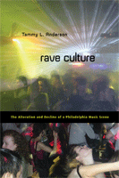

Exposing the forces behind the decline of the rave scene in Philadelphia and elsewhere
Exposing the forces behind the decline of the rave scene in Philadelphia and elsewhere


 Exposing the forces behind the decline of the rave scene in Philadelphia and elsewhere
Exposing the forces behind the decline of the rave scene in Philadelphia and elsewhere

|  |
Rave CultureThe Alteration and Decline of a Philadelphia Music SceneTammy L. Andersonpaper EAN: 978-1-59213-934-7 (ISBN: 1-59213-934-5) |
Charles Horten Cooley Award, 2010
"Anderson clearly has a passion for the subject matter and a keen focus on the 'decline' of rave culture which is to be commended. There is a need for in-depth considerations of post-rave club cultures as embedded in global, national, local and virtual spaces. The thoroughness of Anderson's empirical work, and her engagement with the data is useful and gives voice to young (and not so young!) people and culture."
—Karenza Moore, Lancaster University
It used to be that raves were grassroots organized, anti-establishment, unlicensed all-night drug-fueled dance parties held in abandoned warehouses or an open field. These days, you pay $40 for a branded party at popular riverfront nightclubs where age and status, rather than DJ expertise and dancing, shape your experience.
In Rave Culture, sociologist Tammy Anderson explores the dance music, drug use and social deviance that are part of the pulsing dynamics of this collective. Her ethnographic study compares the Philadelphia rave scene with other rave scenes in London and Ibiza. She chronicles how generational change, commercialization, law enforcement, hedonism, and genre fragmentation fundamentally altered electronic dance music parties. Her analysis calls attention to issues of personal and collective identity in helping to explain such social change and what the decline of the rave scene means for the future of youth culture and electronic dance music.
Excerpt available at www.temple.edu/tempress
"Anderson digs deep into the rave scene and provides us all with a meticulous dissection. Hers is an examination of the Philadelphia rave scene's rise into an industry and then its observational decline from its raw roots as electronic music became more than a fad. These basic principles can be seen in various other U.S. cities and can only help provide insight into what the future may bring."
—Chris Fortier, DJ and producer
"Anderson�s fascinating and original account of electronic dance music in the post-rave era takes up the question of what happens to cultural scenes in their moments of decline and transition. Rave Culture explores all sides of the Philadelphia electronic music scene and then moves to London and Ibiza to capture a shifting terrain in all its global complexity. Conceptually rich and packed with ethnographic detail, this is a solid contribution to the study of music, subcultures, and urban leisure."
—Will Straw, Professor of Communications, McGill University
"Dancing is a most important aspect of many young people's lives because it ritually celebrates, reinforces, and negotiates both individual and collective identities, including those held by the researcher. Expanding on her keen interest in, and commitment to, scrutinizing the transformation of local music scenes in Philadelphia and elsewhere, Tammy Anderson has written an autoethnography that is both provocative and academically sound. In a close-to-the-ground dissection and analysis, she not only argues against simple binaries such as �authenticity� versus �commercialism� and �underground� versus �mainstream� but also correctly identifies rave as a transnational phenomenon of local and global relevance. As a result, this book is an important addition to the growing literature on youth culture, culture change, and the role of social dance in popular music."
—Kai Fikentscher, author of "You Better Work!" Underground Dance Music in New York City
"Rave Culture goes forward through the klatch of promotional hustlers, floppy hat-wearing hangers-on and artistic and cultural icons of that scene; runs from Philly, London, Ibiza and back; takes in the oft-discussed immensity and hedonistic �clat of acid house, etc., abroad�and figures out that some kids lose their personal identity to a somewhat more collective identity."
—The Philadelphia City Paper
"[E]ntertaining...Anderson conducts field work in the course of her investigation. This means that Anderson, a self-professed fan of the EDM scene, gets to party at big music events in Philadelphia and elsewhere. But even as she�s dancing, Anderson is watching, assessing, quantifying, and putting things together....Anderson makes the subject feel applicable to last night�s all-night party."
—Edge
"Anderson does an excellent job situating her subject--raves and other electronic dance music events--in the literatures on music scenes, subcultures, authenticity, and identity....Summing Up: Recommended."
—CHOICE
"While casting much-needed light on the trajectory of this music scene in Philadelphia, Anderson also grapples with how connections between personal and collective identity occur in scenes, how participants in scenes adapt and respond to forces of change, how developments in the Philadelphia scene compare to its counterparts in London and Ibizia, and what the future holds for electronic dance music. The longitudinal and comparative aspects of her book are especially appealing."
—Timothy Dowd Sociology of
Culture's Books of Note
�[Anderson�s] ethnographic methodology, turning her into a participant-observer, is helpful as it provides invaluable insight into the organisation, production and marketing of electronic dance music�. [A] well-written account of the Philadelphia EDM scene and its historical changes but also the importance of its emphasis on scenes in general.�
—Dancecult: Journal of Electronic Dance Music
"Anderson takes the reader on a romp through the Philadelphia rave scene, with brief stops at a range of rave venues as well as detours to London and Ibiza, Spain. The breadth of Anderson�s ethnography provides outsiders with a panoramic view of rave culture, and conveys its dynamism and diversity.... Rave Culture should be of interest to scholars and students interested in youth cultures and broader issues of cultural change."
—American Ethnologist
"This insightful and ambitious book gives one of the fullest pictures to date of the American rave scene, which centers on all-night dance parties featuring electronic dance music....The book�s great strength is its subtle and complex empirical account of the rave scene, including the overlapping social groups, parties and the scene�s vague, contested borders with other forms of nightlife....Anderson�s book is an important contribution to the literature on youth subcultures and among the most comprehensive examinations of American rave culture. Its model of scene change will provide useful tools for [readers] with interests in collective identity, cultural change and cultural criminology."
—Social Forces
"[A] wonderful ethnographic study of the electronic dance music (EDM) scene in Philadelphia.... [T]he importance of Anderson�s Rave Culture lies in its attention to processes of cultural transformation.... The book�s greatest theoretical contributions can be found in its chapter on forces of cultural change.... With its structured and highly visible methodology, Rave Culture would be an excellent resource for teaching ethnographic methods.... Anderson�s book can similarly be utilized as a basis for expanding the analytical models through which researchers explore and examine the life spans of music scenes."
—The American Journal of Sociology
"Rave Culture brings subcultural theory back to speed. Anderson's book, rooted in protracted ethnography, charts the alteration and decline of Philadelphia's rave scene from its high point during the mid- to late-1990s to its 'diminished and fragmented state today.'... [It is] timely and of interest to students of subculture, lending insight into the utility of post-subculture studies at a time when neoliberalism has come full circle. [It is] also of interest to scholars of deviance, symbolic interactionism, and youth culture more generally.... By providing a fuller, richer account of scene alteration and decline, Anderson makes a significant contribution to subcultural theory."
—Symbolic Interaction (online review)
Acknowledgments
1. Introduction
2. Corporate Raves, Weeklies, Underground Parties, and More: Defining the Rave�Club Culture Continuum
3. Loyalists, Spillovers, and Other Party People: Personal and Collective Identities in the Post-rave Era
4. From 1990s Massives to Raves� Death?: Forces of Cultural Change
5. �Players and Their Tracks�: Types of Cultural Work in the EDM Scene
6. EDM as a Vibrant Global Scene
7. Twenty-First-Century Scenes, Sounds, and Selves
Appendix: Methods
Notes
References
Index
 | Tammy L. Anderson is Associate Professor in the Department of Sociology and Criminal Justice at the University of Delaware. She is the editor of Neither Villain, Nor Victim: Empowerment and Agency Among Women Substance Abusers. For more information about her work, visit www.udel.edu/soc/tammya. |
Cultural Studies
Sociology
Music and Dance
© 2015 Temple University. All Rights Reserved. This page: http://www.temple.edu/tempress/titles/2002_reg.html.